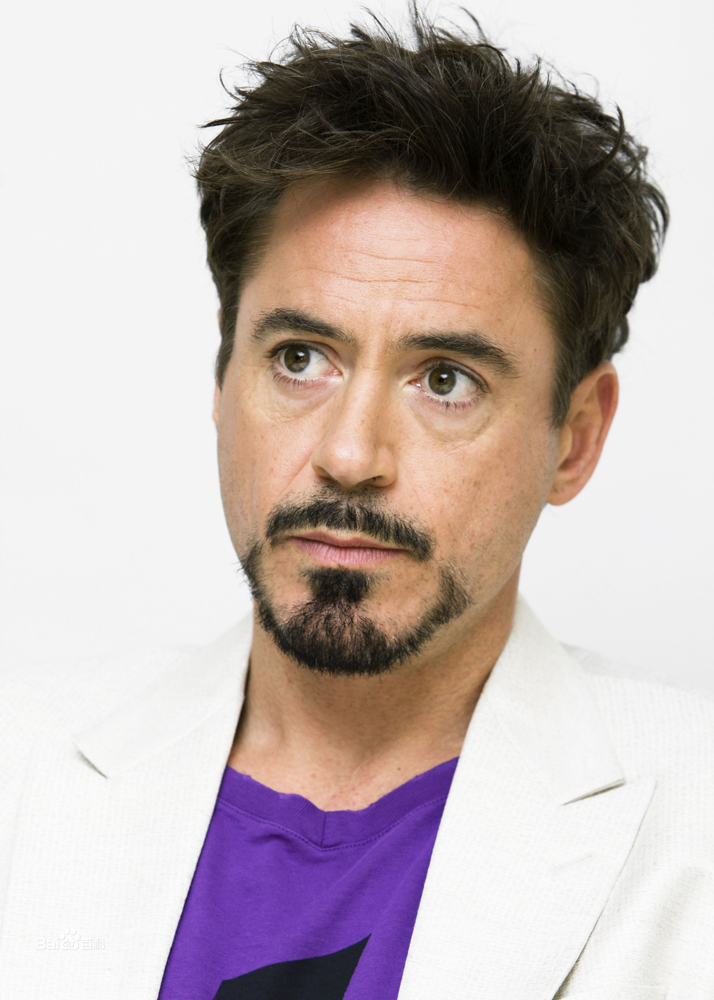

Ро́берт Джон Да́уні (Да́вні[8])-моло́дший (англ. Robert John Downey Jr.; *4 квітня 1965, Нью-Йорк, США) — американський актор, продюсер і музикант. Став широко відомий після релізу байопіку «Чаплін», в якому виконав головну роль коміка Чарлі Чапліна. Дворазовий номінант на премію «Оскар» (1993, 2009), дворазовий лауреат «Золотого глобуса» (2001, 2010) і володар премії BAFTA (1993). Почав акторську кар'єру ще дитиною, зігравши у фільмі свого батька «Загін» (1970). Ближче до початку 1990-х Дауні став затребуваним актором, зокрема, завдяки ролям у фільмах «Ейр Америка» (1990), «Велика піна» (1991) і «Природжені вбивці» (1994). Найбільш відомою і успішною роллю Роберта в XX столітті вважається роль Чарлі Чапліна в однойменному байопіку Річард Аттенборо, що принесла йому премію BAFTA і першу номінацію на «Оскарh». Після низки гучних скандалів в кінці 1990-х, пов'язаних з наркотичною залежністю та тюремним терміном, Дауні повернувся на екрани з другорядною роллю в телесеріалі «Еллі Макбіл», яка принесла йому перший «Золотий глобус» у 2001 році. Далі були ролі в ряді успішних картин, серед яких - «Готика» (2003), «Поцілунок навиліт» (2005) і «Зодіак» (2007). У 2008 році виходять «Солдати невдачі», що принесли Дауні другу номінацію на «Оскар», і «Залізна людина», що поклав початок масштабної медіафраншизи під назвою «Кінематографічний Всесвіт Marvel». В останньому Дауні виконав роль супергероя Тоні Старка / Залізну людину - цю ж роль він незабаром повторив у фільмах «Неймовірний Халк» (2008), «Залізна людина 2» (2010), «Месники» (2012), «Залізна людина 3» ( 2013), «Месники: Ера Альтрон» (2015), «Перший месник: Протистояння» (2016), «Людина-павук: Повернення додому» (2017), «Месники: Війна нескінченності» (2018) і «Месники: Фінал» (2019). Також відомий завдяки ролі Шерлока Холмса в фільмах Гая Річі «Шерлок Холмс» (2009) і «Шерлок Холмс: Гра тіней» (2011). За роль в першій частині був удостоєний другого «Золотого глобуса». У 2013, 2014 і 2015 роках Дауні очолив список найбільш високооплачуваних акторів Голлівуду за версією Forbes. У серпні 2018 року Роберт Дауні-молодший посів третє місце в рейтингу найбільш високооплачуваних акторів року за версією журналу Forbes. За 12 місяців він заробив $ 81 млн.
